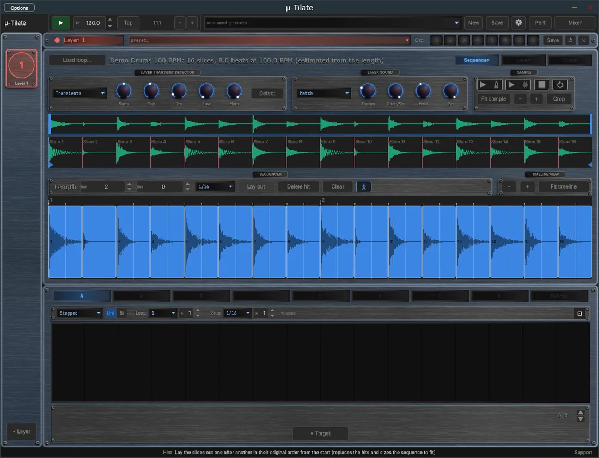
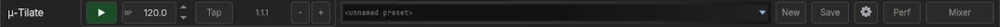
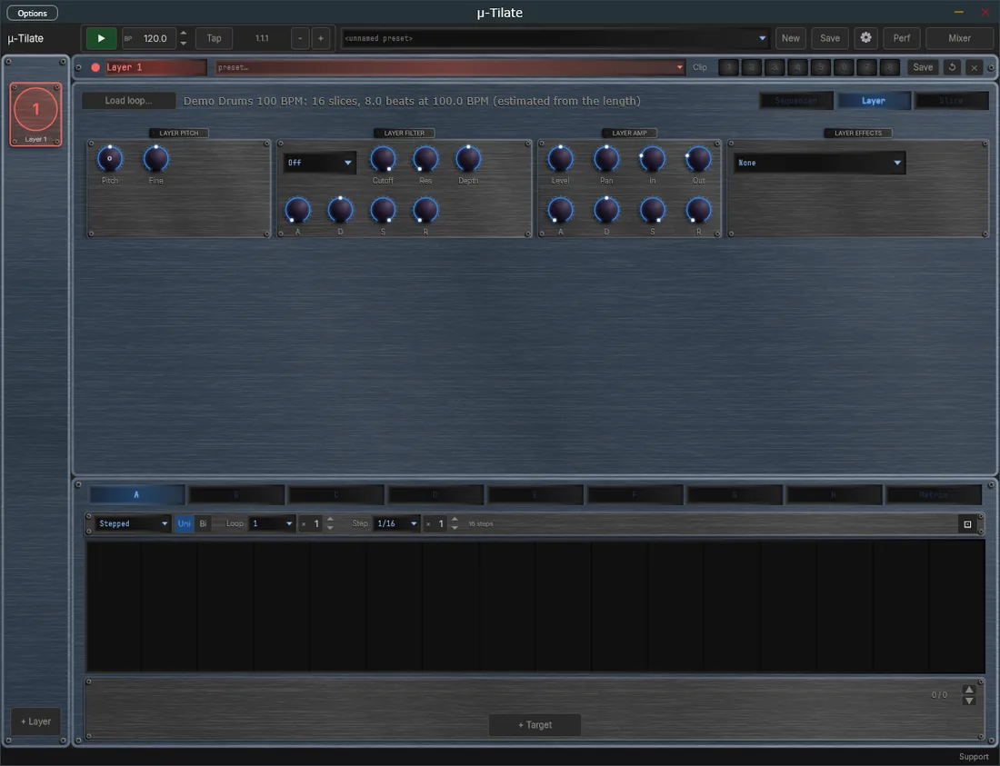
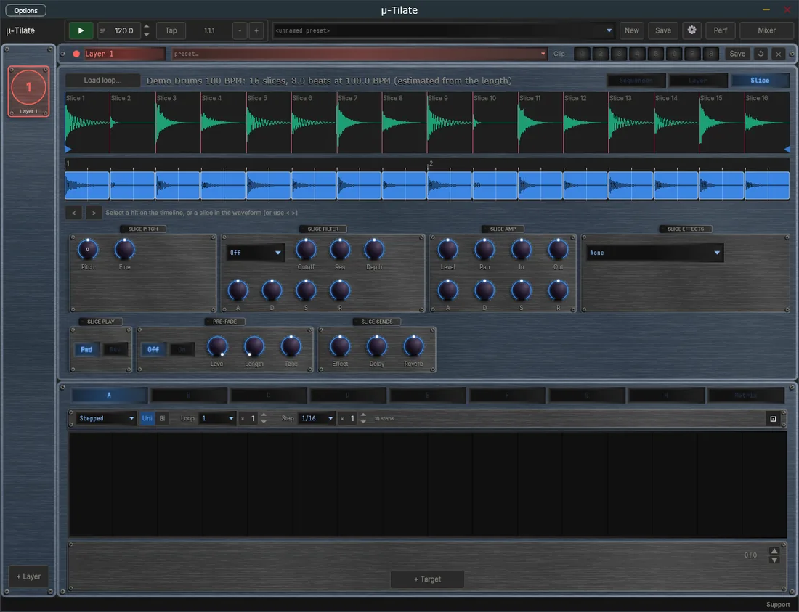
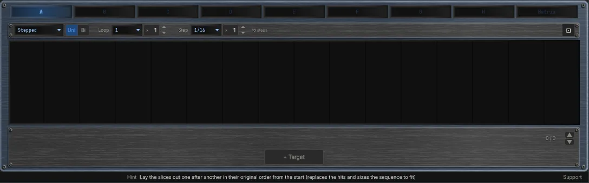
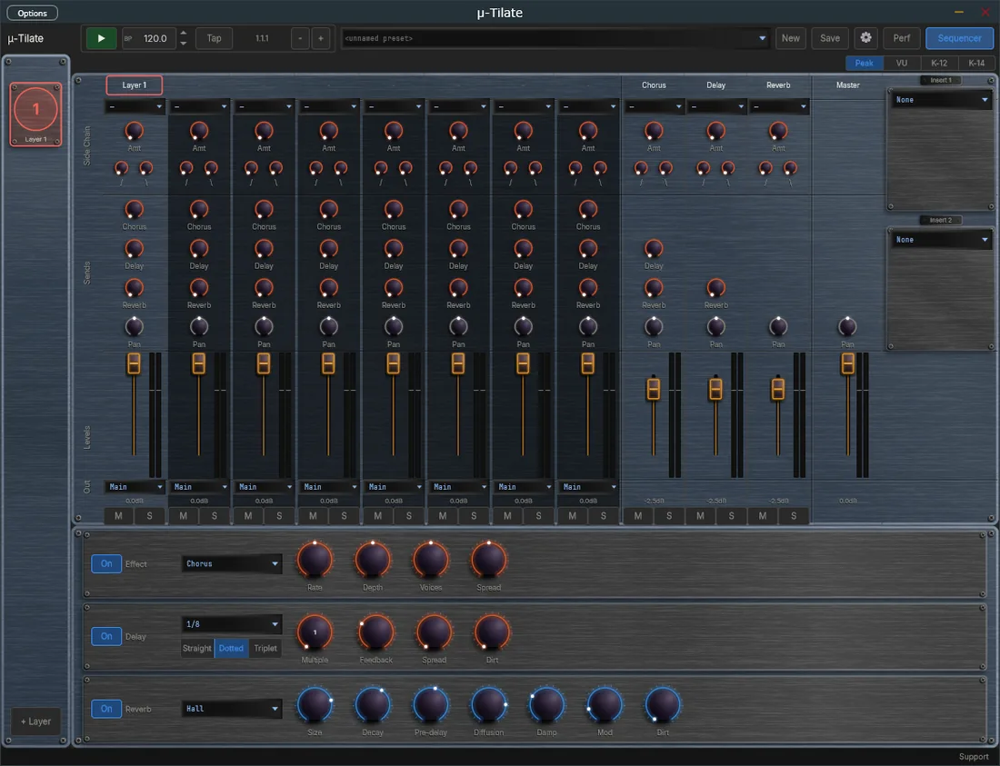
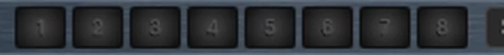
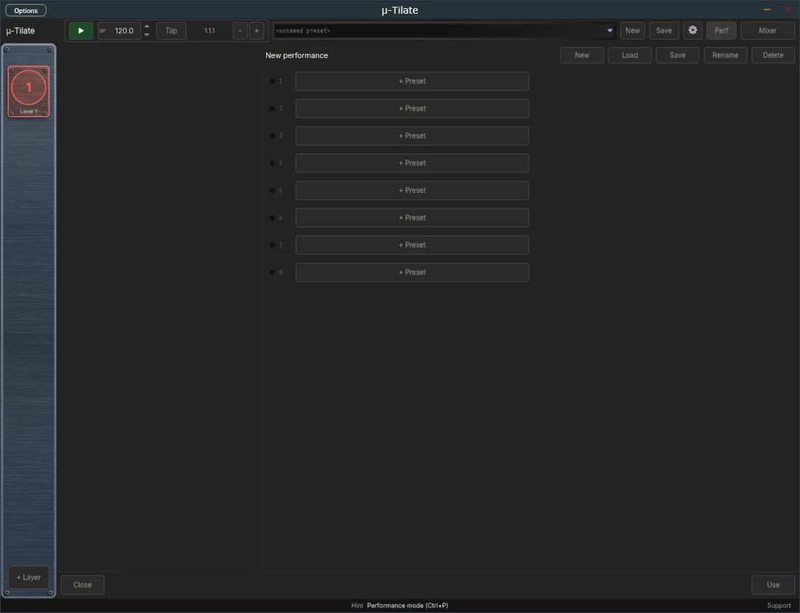
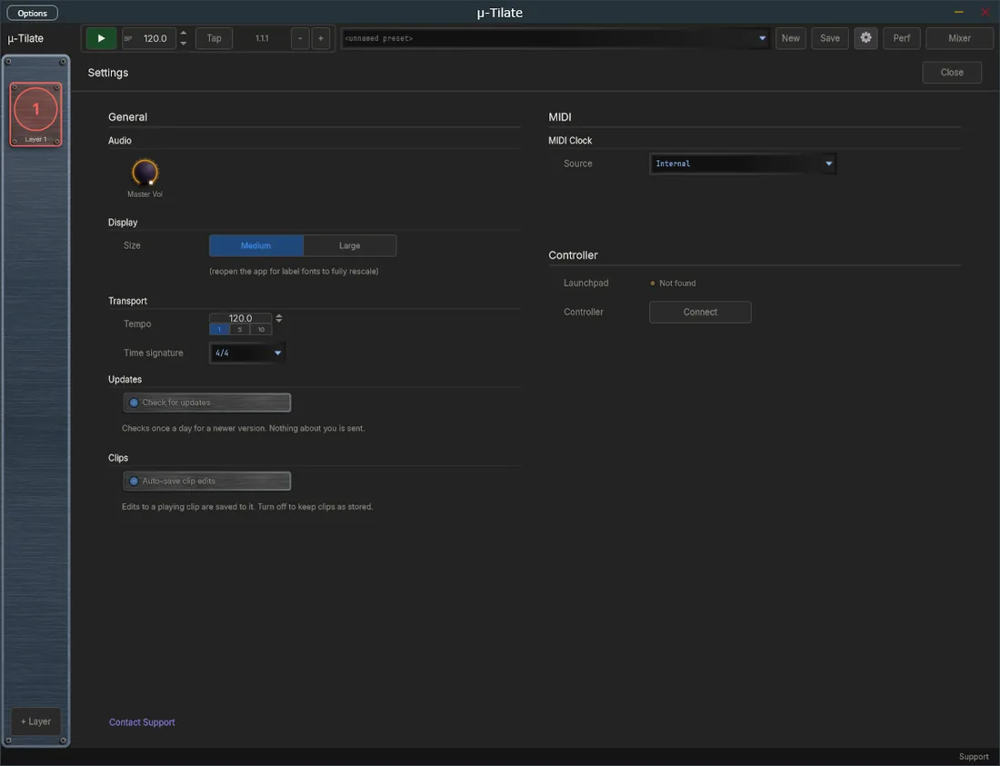

mu-Tilate Manual: Loop Slicer Plugin User Guide
mu-Tilate: Loop Slicer.
Prefer a file? Download the manual as a PDF. Back to mu-Tilate · release notes · all guides.
1. Introduction
mu-Tilate is a loop slicer and sample-loop phrase player from Transwarp Development Project. It runs as a VST3 plug-in, a CLAP plug-in, and a standalone application.
You load a loop, usually a drum loop but any audio will do. mu-Tilate finds the hits in it (the transients) and cuts the loop into slices at those points. A sequencer then places the slices as blocks on a timeline, so you can rearrange the loop, repeat slices, play them backwards, thin them out, re-pitch them, or match the whole loop to the tempo of your song.
mu-Tilate stacks up to eight layers. Each layer holds one loop, its slices and one sample player, and has its own timeline, sound controls, mixer strip, effect sends and modulators. To layer sounds, use another layer. Everything else is the family you may know from mu-Clid, mu-Tant, mu-Toni and mu-On: the same mixer, effects, modulators, presets and transport bar.
mu-Tilate is free to download and use, with every feature, and a one-off £20 licence removes the licence reminder (see Supporting mu-Tilate).
Who Is This For?
mu-Tilate is for producers who want to chop up and re-sequence a loop without a sampler's menus: re-cut a break, stutter a snare, drop out half the hits, or run a loop at your song's tempo with the pitch left alone. It works in a DAW session, fully automatable and synchronised to the host transport, or as a standalone instrument for sketching and live use.
What mu-Tilate Does Not Do
mu-Tilate has no MIDI keyboard play. A keyboard does not play the slices; the sequencer does, from its timeline. You can hear any slice at any time by right-clicking it in the waveform (see Slices and Markers).

2. How mu-Tilate Works
Everything in mu-Tilate follows one path, from the loop to the sound:
- Loop - the audio file you load into a layer.
- Slices - the loop is cut at its hits. Each slice runs from one cut (a marker) to the next.
- Hits - blocks on the timeline. Each hit plays one slice, starting at a beat you choose. A slice can be used once, many times, or not at all.
- Sample player - each layer has one player, and it plays one slice at a time. When the next hit arrives it cuts the previous one through a very short automatic fade, so there are no clicks.
- Layer sound - pitch, filter, amplitude envelope and an insert effect shape every slice in the layer.
- Slice sound - each slice, and each hit, can then nudge the layer's settings with its own offsets, or set a value of its own in place of the layer's.
- Mixer - the layer's strip, with its sends to the shared Effect, Delay and Reverb.
The controls are split into three views of the loop editor, chosen with the switch at the top right: Sequencer (the loop, its slices and the timeline), Layer (the sound of the whole layer) and Slice (the sound of one slice or hit). The layer's values are absolute. A slice's knobs are offsets that are added to the layer's values, unless you switch one to Absolute with its right-click menu (see Offset, Absolute and Clear in the Slice view).
3. Installation
Plug-in Files
mu-Tilate ships in three formats:
- VST3 - copy mu-Tilate.vst3 to %ProgramFiles%\Common Files\VST3\
- CLAP - copy mu-Tilate.clap to %ProgramFiles%\Common Files\CLAP\
- Standalone - run mu-Tilate.exe from any location
Content Folder
On first launch mu-Tilate creates a content folder at %USERPROFILE%\Documents\TDP\muTilate\ with sub-folders for presets (full preset files, .muTilate), phrases (single-layer preset files, .muPhrase) and samples (your loops).
Factory Loops
The download includes a folder called Factory Loops with six short drum loops (two bars of 4/4 each; the number at the end of each file name is the tempo): Boom Bap 90, Broken Beat 110, Four On The Floor 124, Half Time 140, Rolling Hats 128 and Shuffle 100. They are original and free to use for anything (public domain). To use them, copy the .wav files into the Samples folder of the content folder, %USERPROFILE%\Documents\TDP\muTilate\Samples\, then choose them with Load loop (see Loading a Loop).
Supporting mu-Tilate
mu-Tilate is free to download and use, and every feature works for everyone. A copy without a licence shows a polite reminder each time it loads. A one-off licence for £20 removes the reminder: after you pay, a licence key is sent by email from Lemon Squeezy, our payment provider, and entering the key removes the reminder for good. The key changes nothing else; mu-Tilate works the same with or without it.
A copy without a key shows a polite 'Support mu-Tilate' window every time you load mu-Tilate: each new instance in your DAW, and each time the standalone app starts. It has three buttons:
- Maybe later — closes the window for that instance and carries on. It appears again the next time you load mu-Tilate.
- Enter licence key — opens the 'Enter licence key - mu-Tilate' panel, where you type in your key.
- Get a licence — opens the checkout page in your web browser. A licence is a one-off payment of £20, and a key is emailed to you.
The reminder cannot be switched off without a licence. To bring the window back at any time, click the Support link at the right of the Status Bar, or the Support button in the About panel.
To enter your key, click Enter licence key in the Support window, or click the mu-Tilate logo to open the About panel and click Enter a key. In the 'Enter licence key - mu-Tilate' panel (it reads 'Enter your licence key to remove the support reminder. Everything works either way.'), paste your key into the Licence key box and click Activate (or press Return). If you do not have a key yet, click Get a licence to open the checkout page in your web browser. mu-Tilate needs an internet connection the first time, to register the key. One key can be used on up to 5 machines. When the key is accepted the panel shows a confirmation and closes, the About panel thanks you for your support, and the Support window and Support link no longer appear.
A licensed copy shows 'Thank you for supporting mu-Tilate.' in the About panel.
Once activated, mu-Tilate checks your key with the server now and then when it starts. If you are offline at that moment it carries on working as normal for up to 30 days.
If activation fails, the panel tells you why. Check that you pasted the whole key and that you are online, then try again. A key that has already been used on 5 machines needs one of them released first; use Contact Support at the bottom of the Settings page. If the computer has no internet connection at all, the licence key panel shows a machine code at the bottom. Send that code to Contact Support and you can be sent an offline licence file for that computer, to place in the mu-Tilate content folder.
4. Interface Overview
The mu-Tilate window is divided into these regions:
- Transport Bar (top) - playback, BPM, presets, mixer, and settings
- Layer Sidebar (left) - one item per layer, plus an Add button
- Layer Header (top of the editor) - the layer's name, phrase preset, clip strip, Save, Reset and Delete
- Loop Editor (centre) - the Load loop button and loop status line, and three views chosen by the switch at the top right: Sequencer, Layer and Slice
- Modulators (below the editor) - the eight modulators and the Matrix for the selected layer
- Mixer overlay - opened from the transport bar, replacing the editor
- Status Bar (bottom) - a hint for the control under the pointer, or the name, value and unit of the control you last touched, with a small Support link at the right-hand end. When a newer version is available, an Update available link appears beside Support (see Update Check in the Settings chapter)
The window has two sizes, Medium and Large, chosen in Settings (Display, Size). Everything scales with it. In the standalone application an Options button at the top left of the window opens the audio and MIDI device settings.
5. Transport Bar
Controls from left to right:
- mu-Tilate logo — click to open the About panel, where you can also support mu-Tilate or enter a key
- Play / Stop — in DAW mode follows the host transport and BPM, even while the plug-in is bypassed; in standalone starts and stops playback. Locked while an external MIDI clock controls play (see MIDI Clock Sync). While stopped, the sequence is silent.
- BPM display — read-only in DAW mode; editable in standalone. Tempo runs from 20.0 to 300.0 BPM with one decimal (for example 127.5; whole tempos show .0). Click the up or down arrow to step one whole BPM and keep the fraction (127.5 becomes 128.5); Shift+click steps a tenth. Double-click to type a value such as 127.5 or 127,5; a value outside the range is clamped to it. The same field appears in Settings. Locked, and showing the clock's tempo to a tenth, while an external MIDI clock sets the tempo. The clock drives the sequence and the modulators.
- Clock lamp — standalone only. Replaces the Tap button and sits between the BPM display and the Position readout, and appears only while MIDI clock sync is on with Messages set to Clock only or Clock + Transport (it is hidden with Transport only, and when Source is Internal). Dim amber means waiting for clock, green means locked to the clock, red means the clock was lost and the transport has stopped. The lamp stays steady; it never blinks. Hover over it to read its state in the status bar. See MIDI Clock Sync.
- Tap button — standalone only. Takes the place of the Clock lamp whenever the lamp is not shown (the internal clock, or MIDI clock sync set to Transport only), so you see Tap or the lamp, never both. Tap it in time with the beat to set the tempo: it needs two taps, averages your last four intervals, and starts a new count if you pause for more than two seconds. The result is rounded to a tenth of a BPM, kept within 20 to 300, and written into the BPM field.
- Nudge buttons (− and +) — standalone only. Two small buttons just right of the Position readout. Hold − to run the groove 4 % slower, or + to run it 4 % faster, to line up with another player by ear. Let go and the set tempo returns exactly; the BPM field never changes. Under an external MIDI clock, holding a button shifts the groove against the clock by that amount, and the shift stays until the next Start.
- Position — bar, beat, and sixteenth readout (e.g. 3.2.1). In DAW mode it follows the host's position, even while the plug-in is bypassed, and counts in the host's time signature: in 3/4 a bar has three beats, in 7/8 it has seven eighth-note beats, and the last number is the sixteenth within the beat. Bar 1 starts where the host's bar 1 starts, so a pickup bar is counted correctly. The standalone counts in the time signature chosen in Settings (4/4 by default). The time signature only changes the readout; the timeline's bars and the modulator loop lengths still count four beats to a bar.
- Preset dropdown / New / Save — load and save full .muTilate presets. New loads your default preset (tick Save as Default when saving) after asking whether to discard unsaved changes.
- Settings (gear) icon — opens the Settings overlay.
- Perf button — standalone only. Sits between the Settings icon and the Mixer button and turns on Performance mode (also Ctrl+P). See Performance Mode in the Presets chapter.
- Mixer button — opens the mixer overlay. The label changes to Sequencer while the mixer is open.

6. Layer Sidebar
The sidebar shows one item per layer, each with its number, its colour and its name. Click an item to select that layer for editing. The selected layer's colour is used for its header and panel borders.
- Add - the + Layer button at the bottom adds a layer (maximum eight; the button is disabled at eight). A new layer is empty until you load a loop into it.
- Delete - the Delete (x) button in the layer header removes the selected layer, after a confirmation. The last remaining layer cannot be deleted.
- Reorder - drag an item up or down. A layer keeps its loop, settings and colour when it moves.
Layers are named Layer 1, Layer 2 and so on.
7. Layer Header
At the top of the loop editor:
- Layer name and colour dot.
- Phrase preset dropdown - load a single layer from a .muPhrase file in the Phrases folder.
- Clip strip - eight numbered pads that store and recall versions of this layer (see Clips in the Presets chapter).
- Save - saves this layer as a .muPhrase file.
- Reset (circular arrow) / Delete (x) - reset to defaults / remove the layer (both confirm first). Reset also clears the layer's clips, and its confirmation then says so.
8. Loading a Loop
Click Load loop... at the top left of the loop editor. The sample browser opens over the editor. It has two tabs at the top:
- Main Library - your own sample folders. It opens on the folder the last loop came from, or on your Music folder.
- mu-Tilate Content - the Samples folder inside the mu-Tilate content folder (Documents\TDP\muTilate\Samples), where you put the factory loops.
Browse to a file and click it: it plays through the layer so you can hear it before you commit (the transport must be stopped). Click Load to use it, or Cancel to close the browser. The browser lists WAV, AIFF, FLAC and MP3 files. A very long file is refused: loops should be a few bars, not a whole song.
While the file loads, mu-Tilate finds the slices, estimates the loop's tempo and lays the slices out on the timeline in their original order. The line next to the Load loop button then tells you what it found, for example: Demo Drums 100 BPM: 16 slices, 8.0 beats at 100.0 BPM (estimated from the length).
Each layer holds one loop. Loading another loop into the layer replaces its slices and timeline. The loop is saved with the preset or session, so projects reopen with the loops in place.
9. Finding the Slices
Transient Detector
The Layer Transient Detector box, at the left of the Sequencer view, decides where the loop is cut.
- Method dropdown - Transients (the default) cuts at sharp attacks, which suits drums; Soft-tonal looks for softer changes, which suits pads and melodic loops; Even cuts the loop into equal parts.
- Sens (0 to 100 percent, default 50) - sensitivity: how small a rise in the sound counts as a new hit. Higher finds more slices.
- Gap (5 to 500 ms, default 50) - the closest two cuts may be.
- Pre (0 to 20 ms, default 2) - how far before each hit the cut is placed, so the attack is not clipped.
- Low (20 Hz to 2 kHz, default 20 Hz) - sound below this is ignored when looking for hits.
- High (1 kHz to 20 kHz, default 20 kHz) - sound above this is ignored when looking for hits.
- Detect button - detects again with these settings. Slices you placed or moved by hand stay (they are pinned, see below); the others are replaced, and the timeline is laid out again in source order.
A new loop is detected automatically, so the knobs are for refining the result: turn Sens up until a quiet ghost note gets its own slice, or turn Low up to stop a boomy kick hiding the hats, then press Detect.
Slices and Markers
The waveform in the Sequencer view shows the loop with its slices. Each slice is a tinted region with its name at the top (Slice 1, Slice 2 and so on) and a marker at its start. The markers are the cuts.
- Drag a marker to move a cut. It snaps to the Snap grid when a grid is chosen; hold Shift to move it freely.
- Double-click an empty part of the waveform to add a marker. It lands on the nearest attack.
- Alt-click a marker (or right-click it) to delete it.
- A marker you have placed or moved by hand is pinned: it shows a small pin and survives Detect.
- Double-click a slice's name to rename it.
- Click a slice to select it. The selected slice is shown brighter, and its sound is what the Slice view edits.
- Right-click a slice to hear it.
The wheel zooms the waveform around the pointer, Shift+wheel scrolls it, and a middle-button or Ctrl drag pans it. Fit sample shows the whole loop again, and the - and + buttons zoom out and in.
Sample Audition and Cropping
The Sample box, at the right of the Sequencer view, holds the buttons that let you hear the loop on its own, without the sequence:
- Play at project tempo (the play arrow with a metronome) - plays the loop as the layer's Tempo Match and Pitch/Str setting would play it at the current tempo.
- Play original (the play arrow with a waveform) - plays the loop as it is, at its own tempo.
- Stop - stops the audition.
- Loop (circular arrow) - repeats whole-loop auditions until you stop them. A single slice plays once.
- Fit sample - zooms the waveform to show the whole sample. - and + zoom it out and in.
- Crop - cuts the sample down to the play area. The play area is the stretch between the two small blue arrows at the ends of the waveform; drag the arrows to set it. Slices and hits stay; a hit whose slice has been cropped away is dimmed and silent.
The strip above the waveform is the range bar. It shows the whole file: drag its ends to use only a section of the file (the file itself is never changed), and drag inside it to slide the section. After a crop, the range bar can widen the section again.
The audition and the sequence never sound together. Starting the transport ends an audition, and the audition buttons wait until the transport stops.
10. Tempo and Tempo Matching
Finding the Loop's Tempo
The timeline is measured in beats, so mu-Tilate needs to know the tempo the loop was recorded at. When you load a loop it estimates it from the loop's length, on the assumption that the loop is a whole number of bars. Whole bars of 4/4 (4, 8, 16, 32 or 64 beats) and of 3/4 (3, 6, 12 beats and so on) are tried, and the tempo has to fall in the range 75 to 165 BPM. If more than one reading fits, the position of the detected hits decides which one is right, so a loop whose hits fall on a 160 BPM grid is read as 160 and not 80. The result is shown in the status line next to Load loop, marked estimated from the length, and is set on the Tempo knob.
If the guess is wrong, for example for a loop that is not a whole number of bars, set the Tempo knob (20 to 300 BPM) to the loop's real tempo. A saved project remembers the tempo you set.
Tempo Matching
The Layer Sound box, in the middle of the Sequencer view, sets how the loop follows the tempo of your song. Its dropdown has two choices:
- Off - the slices play at their recorded speed and pitch. The sequencer only decides when each one starts.
- Match - the slices are fitted to the tempo of your song, by the ratio of the song's tempo to the loop's Tempo.
In Match mode the Pitch/Str knob (0 to 100 percent, default 100) chooses how the fit is made:
- At 0 percent, Re-pitch. The slices play faster or slower, like a record, so the pitch follows the tempo.
- At 100 percent, Stretch. The slices are time-stretched, so they fit the tempo and keep their pitch.
- In between, a mix of the two.
Two knobs shape the stretch (they matter when Pitch/Str is above 0):
- Hold (0 to 100 ms, default 10) - how long the start of each slice, its attack, is played unstretched. A longer Hold keeps drum hits crisp.
- Str (0 to 100 percent, default 100) - Strength: how much of the stretch is applied after the attack. At 0 the slice is played at its own speed after the attack.
With the Tempo knob set correctly and Match on, slices stay on the grid at any song tempo. Time-stretching uses the Signalsmith Stretch library (MIT licence).
11. The Sequencer View
The Sequencer view is where you arrange the slices. From top to bottom it shows the loop's waveform with its slices (see Slices and Markers), the Sequencer toolbar, and the timeline.
The Sequencer Toolbar
- Length - how long the timeline is: a Bar field and a Beat field. The length is bars times four plus beats, at least one beat and at most 64 bars. The timeline loops at this length.
- Snap dropdown - the grid that hits and their edges snap to: Off, 1/4, 1/8, 1/16 (the default), 1/32, and the triplet values 1/4T, 1/8T, 1/16T and 1/32T. Hold Shift while dragging to move freely, without snapping.
- Lay out - places the slices one after another, in their original order, from the start of the timeline. It replaces the hits and sizes the sequence to fit, so you get the original loop back.
- Delete hit - deletes the selected hit (the Delete key does the same).
- Clear - removes every hit, so you can build a sequence from nothing.
- Follow (the walking figure) - when on, a zoomed timeline pages on to keep the playhead in sight; when off, it stays where you put it.
At the right, the Timeline View box has - and + buttons to zoom the timeline out and in, and Fit timeline to show the whole of it. The wheel zooms around the pointer, Shift+wheel scrolls, and dragging the ruler or the middle button pans.
The Timeline
The timeline is one row of hit blocks under a ruler that shows bars and beats. Each block shows the waveform of the slice it plays. A layer plays one slice at a time, so there is one row; the playhead follows the transport. Edits are applied at the loop boundary, so editing while playing does not glitch.
- Place a hit - select a slice in the waveform, then click an empty part of the row. The hit lands on the nearest grid line (or exactly where you click if Shift is held). You can also drag a slice from the waveform and drop it on the row; a preview shows where it would land.
- Move a hit - drag the block. Hold Shift to move it without snapping.
- Copy a hit - Ctrl-drag. The original stays where it was.
- Trim a hit - drag the left or right edge of a block. The right edge stops the slice early; the left edge skips the start of the slice.
- Retime a hit - Alt-drag an edge. The slice is stretched or pitched to the new width instead of being trimmed, as the layer's Pitch/Str setting decides.
- Delete a hit - select it and press Delete, or click Delete hit.
- Fades and level - a block also has handles for its fades (at its top corners, with a bend handle on each fade) and for its level.
Click a hit to select it. The Slice view then edits that hit's own sound (see The Slice View). Where a block would run past the next one, the next one cuts it, through the automatic fade. Edge drags snap to the grid and keep at least a sixteenth of a beat; hold Shift for free movement.
12. The Layer View
The Layer view holds the sound of the whole layer. Every slice in the layer uses these values, and a slice can offset them in the Slice view. Envelope times run from 0 to 2000 ms. The knob labels are fixed words with no units; the Status Bar shows the value and its units as you hover or turn.
Layer Pitch
- Pitch (-24 to +24 semitones, default 0) - transposes every slice.
- Fine (-100 to +100 cents, default 0) - fine tuning.
Layer Filter
- Type dropdown - Off (the default) or one of the family's sixteen filters.
- Cutoff (20 Hz to 20 kHz, default 20 kHz) and Res (0 to 100 percent, default 0).
- Depth (-100 to +100 percent, default 0) - how far the filter envelope moves the cutoff; negative values sweep it down.
- A, D, S, R - the filter envelope. Defaults: attack 0 ms, decay 100 ms, sustain 100 percent, release 0 ms.
Layer Amp
- Level (default 0 dB) - the layer's output level, up to +6 dB.
- Pan (centre by default) - where the layer sits in the stereo field.
- In and Out (0 to 50 ms, default 0.5 ms) - the fade at the start and end of every slice, added on top of the short automatic fade that is always there.
- A, D, S, R - the amplitude envelope, started by every slice. Defaults: attack 0 ms, decay 100 ms, sustain 100 percent, release 0 ms. With these defaults the envelope leaves the sound untouched.
Layer Effects
The Layer Effects box holds the layer's insert effect. Choose an algorithm from the dropdown (None is the default) and four knobs appear, labelled to match the algorithm. The layer's sends to the mixer's Effect, Delay and Reverb are on the layer's channel strip in the mixer.

13. The Slice View
The Slice view edits the sound of one slice or one hit. At the top are the waveform with its slices and a slim copy of the timeline. Select a slice by clicking it in the waveform, or select a hit by clicking its block on the timeline; the < and > buttons step to the previous or next one. The line beside them says what you are editing:
- A slice selected in the waveform - you are editing the slice's own settings. New hits of that slice start with them.
- A hit selected on the timeline - you are editing that hit's own settings, which then belong to that hit alone.
Unless you change it (see Offset, Absolute and Clear below), every value here is an offset: it is added to the layer's value for that control (set in the Layer view), so a slice with all its knobs at the centre sounds exactly as the layer does. The layer's filter type and insert effect are shown by name; to change them, use the Layer view.
Slice Pitch, Filter, Amp and Effects
- Slice Pitch - Pitch (-12 to +12 semitones) and Fine (-50 to +50 cents).
- Slice Filter - Cutoff (-4 to +4 octaves), Res and Depth (each -100 to +100 percent), and A, D, S, R offsets (times -1000 to +1000 ms, sustain -100 to +100 percent).
- Slice Amp - Level (-12 to +12 dB), Pan (-100 to +100 percent), In and Out (-25 to +25 ms), and A, D, S, R offsets as for the filter.
- Slice Effects - four offsets (-100 to +100 percent) for the four knobs of the layer's insert effect.
Offset, Absolute and Clear
Right-click any Slice knob (the Pre-Fade knobs excepted, which always set their own values) to choose how it works for this slice or hit:
- Offset (adds to the layer) - the default. The knob is added to the layer's value, so the centre position means no change. The knob keeps its normal ring colour.
- Absolute (sets the value) - the knob sets the actual value of that control for this slice, in place of the layer's. The ring turns amber and the knob face shows the actual value. Switching to Absolute jumps the knob to the value the layer is playing now, so nothing changes until you turn it. Switching back to Offset restores the offset you had before.
- Clear (back to the layer) - removes the slice's setting for that knob: it goes back to Offset with no offset, and the remembered offset is dropped.
The Status Bar names the mode and shows the value as you turn the knob. In Offset mode it shows the offset and what it comes to, for example Slice Pitch (Offset) +3 st = 8 st; for the filter cutoff the offset is in octaves and the result in Hz. In Absolute mode it shows just the value, for example Slice Pitch (Absolute) 7 st. Only knobs set to Absolute are saved as Absolute; every other knob stays an offset.
Slice Play
Fwd or Rev. Fwd plays the slice forwards, the default; Rev plays it backwards.
Pre-Fade
Pre-fade is a swell that leads into a hit. Switch it from Off to On and a quiet, reversed copy of the start of the slice plays before the hit, swelling up into it and ending exactly where the slice begins. It is a sound of its own, so it mixes over the end of the previous slice, which is not cut. A hit at the very start of the timeline plays its pre-fade at the end of the previous pass.
- Level (-36 to 0 dB) - how loud the swell is, below the slice.
- Length (10 to 1000 ms) - how long the swell runs before the hit. It is shortened if the slice is shorter.
- Tone (dark to thin) - to the left a low-pass filter darkens the swell (down to 250 Hz); to the right a high-pass filter thins it (up to 2 kHz).
Slice Sends
The Slice Sends box has Effect, Delay and Reverb knobs (-100 to +100 percent). They move the layer's sends while this slice sounds; the sends themselves are the layer's, in the mixer.

14. Modulators
Each layer has eight independent modulators (Mod A through Mod H) plus a Matrix tab - the same shared engine as mu-Clid, mu-Tant, mu-Toni and mu-On. Each layer has its own modulator bank, below the loop editor.
Each modulator has a Mode dropdown (Stepped bar-graph or Smooth drawable curve), a Polarity switch (Uni 0 to +1, or Bi -1 to +1), and a loop length (a note-value dropdown times an integer multiplier). A playhead line shows the current loop position. In Smooth mode the curve is a smooth line through each point that never swings past its neighbours; click to add a node, drag to move, ALT-click a segment to bend it, right-click to remove. In Stepped mode, drag bars up or down. A dice button randomises the current modulator's values without changing its shape.
Add destinations with the + Target button; the assignments are shown one at a time, so step through them with the up and down arrows and the counter at the right. Each assignment has a bipolar depth (-100 to +100 percent) and a source-side curve. A modulator can move the layer's Level, Pan, Pitch, Fine, filter Cutoff, Resonance, Envelope Depth and A, D, S, R, the amp A, D, S, R, the Loop Tempo, Pitch/Stretch, Transient Hold, Strength, Fade In and Fade Out, the four insert knobs, and the mixer strip's Pan and Effect, Delay and Reverb sends. The detector settings, the tempo-match mode, the grid and the filter type cannot be modulated. When a knob is a destination, an arc around it shows the live modulated value.
The Matrix tab lists every assignment across all eight modulators in one table.

15. Mixer
Click the Mixer button in the transport bar to open the mixer overlay. Each layer occupies one channel strip (the mixer always shows eight, with unused ones dimmed; every strip has an Out selector at its foot, set to Main); to the right are the Effect, Delay, and Reverb return channels and the Master strip. This is the same shared mixer and FX rack as mu-Clid and mu-Tant.
Each layer strip has a fader with VU metering, pan, mute and solo, sidechain ducking (source, amount, attack, release), and Effect / Delay / Reverb sends. The sidechain source dropdown includes all other layer channels plus an External option — duck any layer from any other, or from a signal fed in through the host's sidechain bus (VST3 / CLAP). The FX return strips carry intra-FX routing (Effect to Delay, Effect to Reverb, Delay to Reverb), and the master strip has two inserts, Insert 1 and Insert 2, that the summed output passes through in that order. A row of buttons at the top right (Peak, VU, K-12, K-14) chooses the metering standard. The three FX rows (Effect / Delay / Reverb) sit below the strips with algorithm selectors and inline parameters.
The faders use a rectangular cap like a small knob, with a pointer line across its middle that marks the level, running in a groove that lights up from the bottom to the cap. Every fader in the mixer looks and works the same way. In the Status Bar the mixer's Pan, Send and Sidechain knobs, the Level fader, the Mute and Solo buttons and the Effect and Delay switches all show their name and value as you use them. The sidechain Attack and Release start at 0 and can go down to 0.
Effects
- Effect — Chorus (Rate, Depth, Voices, Spread), Flanger (Rate, Depth, Feedback), Phaser (Rate, Depth, Stages, Feedback) or Echo (Time, Feedback, Spread). The Effect is a pure send, like the Reverb, so it has no Mix knob; use each layer's Effect send.
- Delay — a Time dropdown (Free, 1/32, 1/16, 1/8 or 1/4). With a note value, a Straight | Dotted | Triplet switch and a Multiple knob (1 to 8) set the time; in Free mode a Time knob sets it in milliseconds. Feedback, Spread and Dirt complete it.
- Reverb — Room, Hall, Plate or Spring, with Size, Decay (how long the tail rings, 0.1 to 10 seconds, default 2.5), Pre-delay, Diffusion, Damp, Mod and Dirt. Reverb is a pure send.

16. Presets
Full Presets (.muTilate)
Full presets save the entire plugin state - all layers, modulators, mixer, and FX - to Documents\TDP\muTilate\Presets. Load from the transport dropdown, which is grouped by category. Save with the Save button: enter a name, an optional description and a category, and tick Save as Default to make it the preset that loads at startup and when you press New. If saving fails (for example a full disk) mu-Tilate shows an error message and never leaves a half-written preset.
Per-Layer Presets (.muPhrase)
Each layer can be saved and loaded independently to Documents\TDP\muTilate\Phrases, including its loop, its slices, its sequence, its sound and its modulator assignments. Use the layer header dropdown and Save button.
When a preset, a layer preset or a saved session is loaded, any setting it does not contain is set to its default.
Clips
A clip is a stored copy of one layer's current state, ready to recall in a moment while the music plays. Every layer has up to eight clips. They sit in the Clip strip in the layer's header, between the layer-preset dropdown and the Save button: the word Clip followed by pads numbered 1 to 8. Use clips to prepare variations of a layer and switch between them in time.
Each pad is lit in the layer's own colour:
- Bright and steady — the clip that is playing.
- Dim — a clip is stored here and is available.
- Unlit, with just its number — the pad is empty.
- Pulsing — the clip is queued and will start at the next bar.
- Flashing on and off — the playing clip belongs to a muted layer.
How to use the pads:
- Click a stored pad to launch it. If playback is running, the clip waits for the next bar and the pad pulses until it starts; when playback is stopped it starts at once. Clicking another stored pad while one is waiting replaces the waiting clip.
- Click the playing pad to mute the layer. Click it again to unmute. If another clip is waiting, the click cancels the wait instead and the playing clip carries on.
- Click an empty pad to store the layer's current state there. Nothing is lost, so there is no question. The new clip becomes the playing one.
- Shift + click any pad to store the layer's current state in it. If the pad holds a different clip from the one playing, mu-Tilate asks you to confirm with Replace. Storing over the playing clip, to update it after a tweak, needs no confirmation.
- Right-click a pad (or Ctrl + click) to open a small menu with Store here and Clear. Clear is available only on a stored pad and asks you to confirm. Clearing the playing clip leaves the layer playing as it is; no pad is lit afterwards.
Turning a knob changes only the layer that is playing, not the stored clip. To keep a tweak, store it again with Shift + click. Recalling a clip replaces any changes you have not stored, without asking.
Resetting a layer with Reset also clears its clips; the confirmation then reads This also clears its clips. Deleting a layer removes its clips with it. Clips are saved with full presets (.muTilate) and with your DAW session or standalone state. Clips are not saved in single-layer .muPhrase files.
In Performance mode the Clip strip cannot be clicked, but it keeps moving so you can see what the control surface is doing.

Performance Mode (Standalone)
Performance mode turns the standalone app into a locked gig view. The screen shows the preset that is playing, exactly as normal, but you cannot change anything with the mouse or keyboard. Only a connected control surface (set up through MIDI mapping) switches presets and layers. Performance mode is not available in the VST3 or CLAP plug-in.
Performance mode plays a performance: a saved list of up to eight full presets, stored as a .muPerformance file in the Performances folder inside your content folder. You make, edit and choose performances in the Performance chooser.
The Performance Chooser
Open the chooser from the Performances entry at the bottom of the preset dropdown in the Transport Bar, from the Performances button in the footer of the Preset Browser, or by clicking the Perf button (or pressing Ctrl+P) when no performance has been chosen yet. You can only open it while Performance mode is off.
- On the left is the list of your saved performances. Click one to open it. The list scrolls.
- On the right are the eight places in the performance. Each row shows its number, the preset name, which product the preset is for, and buttons. An empty row has a + Preset button. A filled row has Replace, Up, Down and Remove: Replace picks a different preset, Up and Down move the preset in the order, and Remove empties the place.
- A preset whose file can no longer be found stays in its place with a red lamp and the word missing. Replace it or remove it.
- New starts an empty performance. Load opens a .muPerformance file that you choose from disk into the list; it never saves anything. Save stores the performance under a name and an optional description. Rename changes its name. Delete removes the saved file after asking you to confirm. Saving under the name of another performance asks before it overwrites.
- Use makes this performance the one that Performance mode plays, then closes the chooser. It does not change the preset that is playing now. If the performance is new or has changes you have not saved, Use saves it first (a new one asks for a name). Use is unavailable while the performance has no presets.
- While you have unsaved changes the title shows the name followed by (unsaved). Closing the chooser, clicking New, or opening another saved performance then asks Discard unsaved changes? Choose Discard to lose the changes, or cancel to keep working.
To fill a place, click + Preset or Replace. The Preset Browser opens in pick mode: its Load button reads Pick, and the Performances button is hidden. Select a preset and click Pick (or double-click it) to put it in the place and return to the chooser with your other edits kept. Close returns to the chooser without picking. The browser lists presets for this product only.

Entering
Click the Perf button (or press Ctrl+P). The preset that is playing carries on. Any open window, such as the Preset Browser, Mixer or Settings, closes without saving. If no performance has been chosen yet, the Performance chooser opens instead and the mode stays off.
What You See
- The Perf button lights in the app colour and its label changes to LIVE, and a thin lit line runs along the bottom of the Transport Bar.
- The preset dropdown, New and Save are replaced by a step indicator: a display showing the position and name of the playing preset (for example 3/8 Bassline), followed by a dimmed next preset when there is room, and a row of eight lamps. A bright lamp is the playing preset, a dim lamp is an available preset, a pulsing lamp is the preset queued to start, and an unlit lamp is an empty place. A red lamp marks a preset whose file is missing.
- When the control surface queues a switch, the playing preset stays on screen until the switch lands. The queued lamp pulses, an orange SWP badge appears, the display shows the queued preset in pulsing text, and the status bar reads Queued followed by the preset. All of this clears when the switch happens or is cancelled. The switch lands at the next bar.
- In the sidebar, the Add button is replaced by a read-only indicator such as Layer 3/5. The screen follows the control surface: selecting a layer on the surface shows that layer on screen.
- Nothing dims or changes colour; knobs, meters and the playhead keep moving, so you can see what the surface is doing.
Leaving
Press and hold the Perf button for one second. The button fills from left to right while you hold, and the status bar reads Hold to leave Performance mode. Let go early to stay in the mode. A plain click does nothing, so you cannot leave by accident. When you leave, the normal controls come back.
17. Settings
Click the gear icon to open the Settings overlay. Everything fits on one screen, in two columns, under two headings. Click Close to return.
General (left column):
- Audio, Master Vol — overall output level
- Display, Size — Medium or Large window. Reopen the app for the label fonts to rescale fully.
- Transport, Tempo — internal clock, 20.0 to 300.0 BPM with one decimal, also editable from the transport BPM field
- Transport, Time signature (standalone) — 2/4, 3/4, 4/4, 5/4, 6/4, 7/4, 5/8, 6/8, 7/8, 9/8 or 12/8; default 4/4. It changes how the bar.beat.sixteenth Position readout counts (a beat is a quarter note in x/4 and an eighth note in x/8). The sequencer's bars are not affected: they always count four beats.
- Updates, Check for updates — a tick box, ticked by default. Whether the app checks once a day for a newer version (see Update Check below).
MIDI (right column):
- MIDI Clock, Source (standalone) — Internal, or MIDI In to follow an external MIDI clock, with a Sync Offset to compensate for audio latency (see below).
- MIDI Program Change — the Layer Presets and Full Presets buttons open the tables that map incoming program-change messages to presets.
A Contact Support link sits at the bottom of the page. The Settings page also has a Send Feedback link (feedback@transwarp.me) beside Contact Support.

Update Check
mu-Tilate can tell you when a newer version is available. Once a day it asks the transwarp.me website for the latest version number. When a newer version exists, a small Update available link appears at the right of the Status Bar, beside the Support link. Hover over it to see which version is out and which one you have.
- Click the link to open the download page in your web browser. mu-Tilate never downloads or installs anything itself. The link then stays hidden for that version and comes back only when a still newer one is released.
- Right-click the link and choose Hide this notice to hide it for that version without opening the page.
- The link never appears in Performance mode.
Privacy: the check is a plain request for a public file. It sends nothing about you: no name, no identifier, no version number and no details of your computer. As with any request to a website, the site can see your internet (IP) address, as it would if you opened the page in a browser. The app compares the answer with its own version on your machine. To switch the check off, open Settings and, under General, untick the Check for updates box. With the box unticked, mu-Tilate sends no request at all and shows no link. The box is ticked by default.
MIDI Clock Sync (Standalone)
When running as a standalone application, mu-Tilate can follow an external MIDI clock from a drum machine, groovebox, or DAW. First choose the MIDI input that carries the clock in the standalone's MIDI settings. Selecting the input does not turn sync on by itself. To follow the clock, open Settings and, in the MIDI Clock section, set Source to MIDI In; set it back to Internal to turn sync off and ignore any incoming clock. A Messages choice appears, which decides what mu-Tilate takes from the clock:
- Clock only — you start and stop mu-Tilate with its own Play button, but the tempo and beat follow the clock's ticks. The BPM field is locked and shows the clock's tempo. The clock's Start and Stop messages are ignored.
- Transport only — the clock's Start, Continue, and Stop messages control playback (Start restarts from bar 1, Continue carries on from where it stopped), but mu-Tilate plays at the tempo in its own BPM field and ignores the clock's ticks. The Play button is locked.
- Clock + Transport — the clock runs everything. Its Start, Continue, and Stop messages start and stop playback, and its ticks set the tempo and the beat. The first clock after Start counts as the downbeat, so your slices line up closely with the external device. The Play button and BPM field are locked.
With Clock + Transport or Transport only, mu-Tilate also follows Song Position Pointer messages. If you stop the external sequencer, move its playhead, and press Continue, mu-Tilate picks up from the new position instead of where it stopped.
With Clock only or Clock + Transport, a Clock lamp appears in the transport bar, between the BPM display and the Position readout. It shows the state of the incoming clock and stays steady in every state; it never blinks:
- Dim amber — Waiting for clock. Sync is on, but no clock pulses have arrived yet, or the master device is stopped and sending nothing.
- Green — Locked. mu-Tilate is following the clock. Hover over the lamp and the status bar shows the tempo, for example "Locked at 120 BPM".
- Red — Lost. The clock pulses stopped arriving for about a quarter of a second while the master was playing, for example because a cable came loose or the master device was switched off. mu-Tilate stops the transport, and the status bar shows "MIDI Clock: Lost, transport stopped" once, without you having to hover. When the pulses come back, mu-Tilate carries on by itself.
The lamp is hidden with Transport only, because the clock's ticks are not used, and whenever Source is Internal. The BPM display works as before: it is locked and shows the clock's tempo while the clock sets the tempo.
Sync Offset — with Source set to MIDI In, a Sync Offset field appears in the MIDI Clock section of Settings. It runs from −50 to +250 ms (the label reads simply Sync offset) and defaults to 0. The value is shown with a sign, for example +25. The arrows step 1 ms; Shift+click steps 10 ms. A positive value makes mu-Tilate play earlier than the clock says. Enter your audio output latency here (about 20 to 40 ms on Windows WASAPI) so the sound lands on the beat of a hardware master. mu-Tilate remembers the setting between sessions.
MIDI Program Change to Preset
mu-Tilate can load presets from incoming MIDI program-change messages. On channels 1 to 8 a program change loads the matching .muPhrase into that layer; on channel 9 it loads a full .muTilate preset. While playing, the change is staged and applied seamlessly (hot-swap). Configure the mappings with the Layer Presets and Full Presets buttons in Settings, under MIDI Program Change.
18. Connecting to mu-link
mu-link is a companion application from Transwarp Development Project: a local audio hub and master clock for the mu family. When mu-link is running, the mu-Tilate standalone application connects to it automatically — mu-Tilate's audio is summed into mu-link's mix and its transport locks to mu-link's master clock. The plug-in versions are unaffected; only the standalone connects, because in a DAW the host already owns the clock and audio device.
How to Connect
- Launch mu-link, then launch mu-Tilate standalone — in either order. Within about a second the mu-Tilate title bar shows 'mu-link connected'.
- mu-Tilate's audio now plays through mu-link's output device, summed with any other connected mu apps, and appears as a channel in mu-link's client strip with its own level, pan, mute, and solo.
- mu-Tilate's sequencer and modulators follow mu-link's clock: mu-link is the tempo master, and its Play/Stop and tempo drive mu-Tilate. Use mu-link's transport (not mu-Tilate's) while connected.
- Quit mu-link and mu-Tilate instantly reverts to its own audio device and internal transport — no restart needed.
- MIDI in — the controllers you enabled in the standalone's MIDI settings still reach mu-Tilate while it is connected, so program changes still load presets. For now they arrive roughly 85 milliseconds late, which is under a tenth of a second. Incoming MIDI clock is not followed while connected, because mu-link sets the tempo; to sync to external gear, connect its clock to mu-link instead.
This lets you run mu-Tilate, mu-Clid, mu-Tant and other mu standalones together, perfectly in sync and mixed to a single output — and lets mu-link slave the whole rig to an external MIDI clock. See the mu-link User Manual for the full picture.
19. Tips and Workflow
- Starting out: load one of the factory loops, press Play, and click Lay out to get the original loop back, then start editing.
- Stutter: select a snare slice in the waveform and click empty cells of the timeline to place it again and again.
- Thin it out: select a hit and press Delete to take hits out of the groove. Fewer hits often sound better than more.
- Reverse a fill: select the last hit of a bar, open the Slice view and set Slice Play to Rev.
- Build into a hit: turn Pre-fade on for the slice after a gap for a reversed swell into the downbeat.
- Match your song: set the Tempo knob to the loop's real tempo, switch the Layer Sound dropdown to Match, and raise Hold if the stretched hits lose their snap.
- Re-pitched feel: in Match mode, turn Pitch/Str down to 0 percent for a varispeed sound that follows the tempo.
- Tidy the cuts: if a slice is cut in the wrong place, drag its marker; it is pinned and survives Detect.
- Layered loops: add a second layer with a different loop, give it a longer timeline Length, and the two loops drift in and out of step.
- Evolving patterns: put a slow smooth modulator on a layer's filter Cutoff or on its Pitch.
20. Technical Specifications
- Formats: VST3, CLAP, Standalone (Windows)
- Layers: 8, each with one loop, one monophonic sample player and one timeline row
- Loop files: WAV, AIFF, FLAC, MP3
- Slice detection: Transients, Soft-tonal and Even methods, with sensitivity, minimum gap, pre-roll and low and high band limits
- Timeline: 1 beat to 64 bars, grid from 1/4 to 1/32 plus triplets
- Tempo matching: Off or Match, from re-pitch to time-stretch (Signalsmith Stretch)
- Layer: pitch, filter (16 types), amp envelope and one insert effect; each slice and hit adds its own offsets, a Forward or Reverse play direction and a pre-fade swell
- Modulators per layer: 8 (smooth LFO or stepped), plus a matrix view
- Full preset format: .muTilate. Per-layer preset format: .muPhrase
- Third-party libraries: JUCE, Signalsmith Stretch (MIT), Signalsmith Reverb (MIT), clap-juce-extensions (MIT)
Hosts That Do Not Run an Event Loop
mu plugins need the host to run its normal event loop, as every ordinary DAW does. A few headless or offline-only renderers do not. In those, changes made by MIDI or a controller, MIDI program changes, and preset loads made while playing may not take effect until the host runs its event loop. If you hit this, load presets while the transport is stopped, or render with a host that runs its event loop.
Prefer a file? Download the manual as a PDF. Back to mu-Tilate · release notes · all guides.